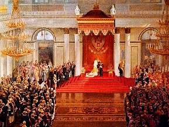

Борис Акунин
Мой календарь
В России много что есть, всего не перечислишь. Просторы, полезные ископаемые, моря и реки, законы и ведомственные акты, декреты и запреты, государевы люди и просто люди. И очень много праздников. Один из них стоит особняком, ибо чествует то, чего не существует.
Сегодня страна отмечает «День российского парламентаризма». Впрочем, возможно, это не праздник, а день скорби, потому что с парламентаризмом в России всегда была печаль.
Праздник назначен в память об открытии первого российского парламента, Государственной Думы первого созыва - в 1906 году. Дума оказалась для монархии опасной, поэтому ее быстро разогнали, а вскоре за ней и вторую. Потом, в 1917 году, Дума сама скинула правительство.
В Советском Союзе это был орган сугубо декоративный. В демократической Российской Федерации - проблемный, так что пришлось по нему из танков стрелять. В двадцать первом веке вернулись к тихому советскому варианту, и парламент опять стал «не местом для дискуссий». Зато вот установили праздник парламентаризма - 27 апреля.
Правда, дело в том, что вообще-то первый российский парламент начал работать 10 мая, а 27 апреля - это дата по старому, давно отмененному стилю. То есть чествуют то, чего нет, в день, когда ничего не было. Что и логично.
На самом же деле 27 апреля можно было бы отметить другую годовщину - введение в 1925 году режима обязательной прописки, которую историки считают шагом по частичному восстановлению крепостного права: куда прикреплен, там и живи.
Сегодня грустим о том, чего нет, и надеемся, что оно когда-нибудь появится.